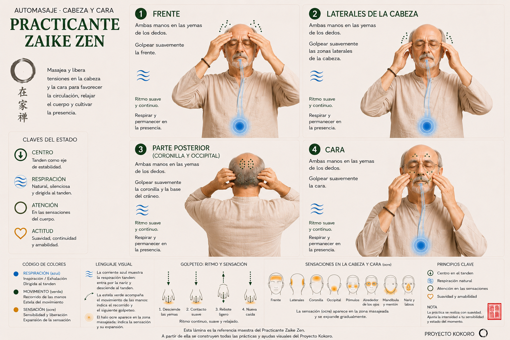
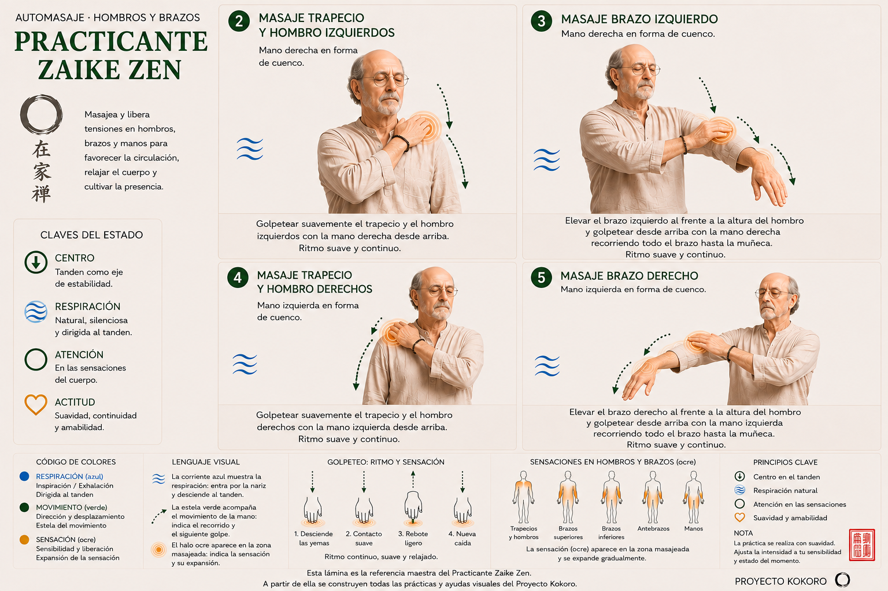
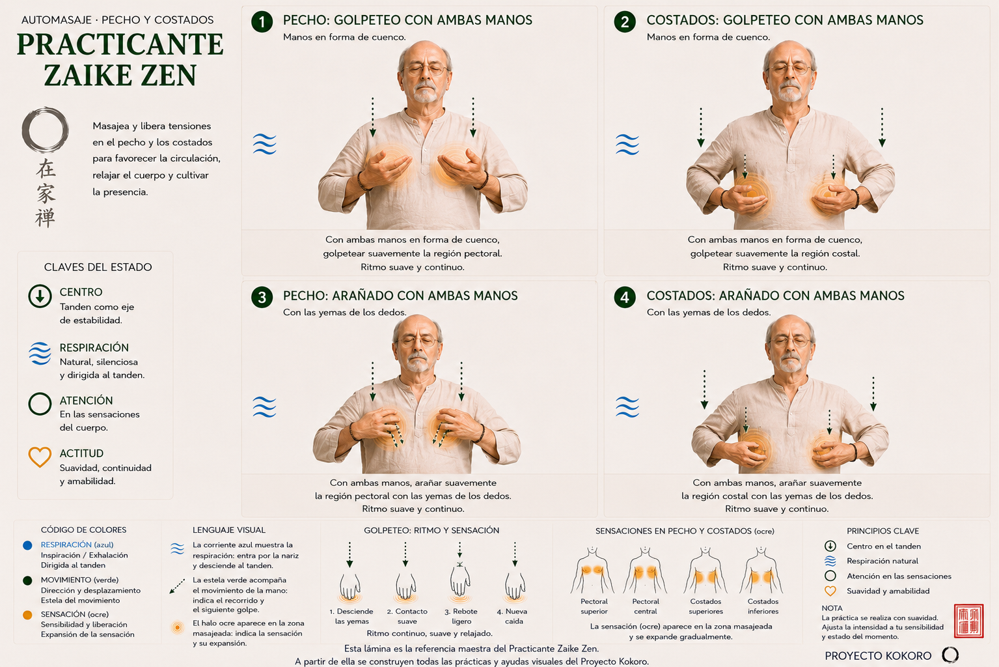
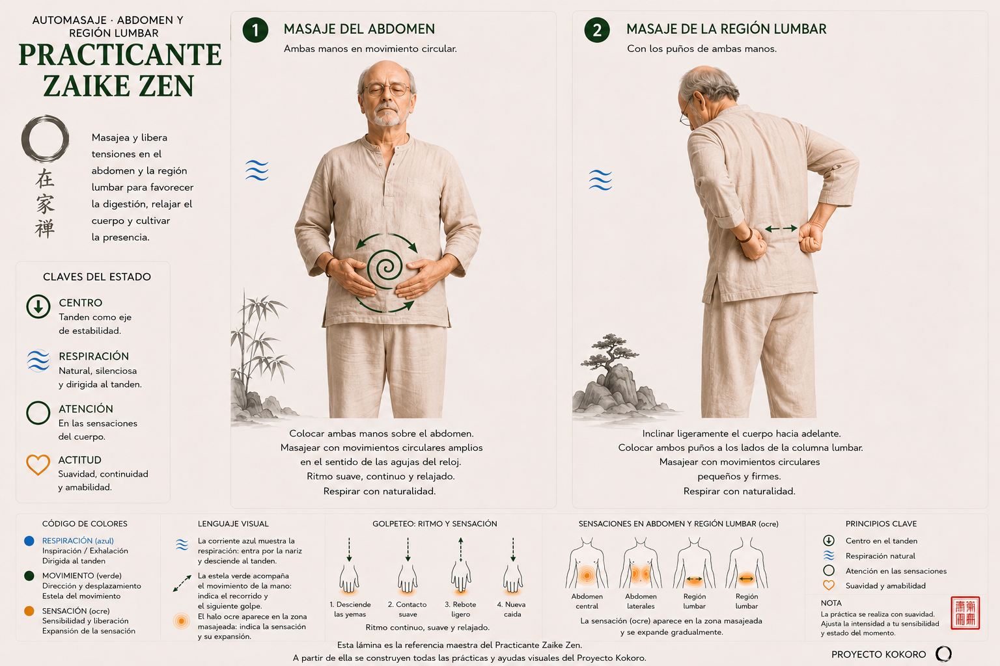
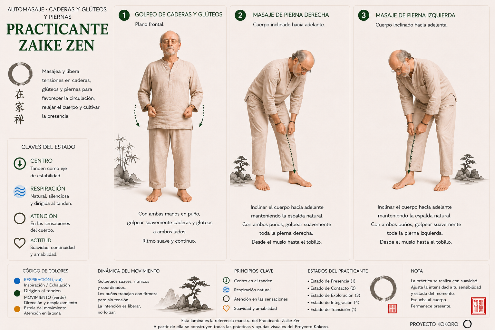

Automasaje
Preparar el cuerpo y la atención para la meditación
Introducción
Es una ayuda para conectar con nuestro propio cuerpo preparándolo para la meditación y, al mismo tiempo, es un objeto de atención para la mente, ofreciéndole una alternativa a su discurso habitual. Cuando realizamos automasaje del cuerpo con nuestras propias manos, armonizamos el movimiento, la sensibilidad y la respiración en un solo foco de atención. Acción y efecto se integran en un mismo contexto dinámico haciendo que la atención quede anclada al ritmo de la respiración. Por supuesto, dista mucho de ser un proceso automático que se aprende y ejercita de forma rutinaria. La acción y el efecto se retroalimentan de tal manera que ajustamos la acción para conseguir el mejor efecto. Esto requiere de atención focalizada y mantenida. Si, además, armonizamos la respiración completamos tres focos de atención en un mismo proceso. Esto nos permite abstraernos del pensamiento discursivo habitual y abrir espacios de silencio en los que las sensaciones corporales evolucionan con su propio lenguaje. De esta forma, conseguimos recogernos en nuestro propio mundo durante un tiempo precioso.
Paralelamente, los efectos físicos del automasaje contribuyen a que las sensaciones de relajación y distensión sean más perceptibles, llevándonos a un estado de bienestar que somos capaces de evidenciar. Con el entrenamiento, nuestra mente consigue distraerse de sus procesos discriminatorios y se abre a un espacio más simple e íntimo en el que la unión entre mente y cuerpo es más presente.
Hay muchas formas de automasaje. La que proponemos aquí es una síntesis orientada a ser practicada en el contexto de la meditación. De esta forma, el automasaje es una ayuda, un paso previo, para que el practicante pueda salir de sus procesos mentales habituales de forma gradual para abrirse a los procesos mentales que son más propios de la meditación. El automasaje y la meditación en movimiento son la antesala de la meditación sentada y en quietud. Son, como antes decía, ayudas de las que nos servimos para vencer las resistencias y preparar tanto el cuerpo como a la mente para la apertura que supone la experiencia de la meditación.
Técnica
Posición inicial
A continuación, presentamos una propuesta básica, que puede ser matizada y complementada convenientemente por el maestro acompañante en función de la persona o del momento concretos de los que se trate. Esta práctica suele realizarse antes de la meditación sentada (zazen) y en los intervalos entre varias sentadas, pero también podrá utilizarse antes de realizar meditación acostada o antes de irse a dormir. Lo ideal es profundizar en su completo aprendizaje antes de buscar aplicaciones concretas en otros contextos.
Partimos de la posición de pie, con las extremidades inferiores prolongándose de tal forma que los pies se abran alineándose con las caderas. Con las manos en el tanden, realizamos algunas respiraciones para armonizar el cuerpo e interiorizar la atención. Conservamos las sensaciones de la respiración para armonizarlas posteriormente con movimientos y sensorio.
Cabeza y cara
Comenzamos frotando cara y cabeza con las palmas de las manos, con movimientos sencillos como los que realizamos para asearnos. Empezamos con movimientos delicados, más como caricias, evitando sensaciones bruscas o desagradables. Buscamos el tacto y la presión adecuados y repetimos durante algunos segundos. Primero en la cara y después en el cuero cabelludo, elevando los codos de la forma que resulte más equilibrada. Movimientos lentos, sentidos, observados, integrando las sensaciones para obtener el efecto adecuado. Lo notaremos claramente a poco perseverantes que seamos, por su efecto benefactor.
Posteriormente, golpeamos suavemente con las yemas de los dedos la frente y el cuero cabelludo, observando las sensaciones según la presión y el tacto ejercidos, y reajustando también la posición de los brazos, codos y manos. Cada persona conseguirá poco a poco la armonización que conduzca a los efectos adecuados, teniendo en cuenta siempre la suavidad, la delicadeza y el respeto por nuestro cuerpo. A continuación, ejercemos este masaje con las yemas de los dedos en la cara poniendo atención de suavizar todavía más la presión ejercida, evitando sensaciones desagradables y buscando sensaciones agradables.

Hombros y brazos
Ahora, bajaremos el masaje a la zona que va del cuello a los hombros y, posteriormente, a los brazos hasta las manos, primero de un lado y después del otro. En esta ocasión, el golpeteo no lo daremos con las yemas de los dedos sino con la mano curvada en forma de cuenco. El ritmo y la presión de los golpes los iremos ajustando con la experiencia y los efectos observados, haciendo prevalecer siempre lo agradable y reconfortante. Según el tiempo y la paciencia podemos ser más o menos minuciosos, habitualmente se suele descender por la parte externa del brazo, girarlo, y ascender por la parte interna, una o dos veces.

Pecho y costados
Después de subir del último brazo, continuamos golpeando suavemente con ambas manos en cuenco la zona pectoral y costal durante el tiempo necesario para abarcar la superficie de esta parte del cuerpo. Incluiremos los costados subiendo y bajando un par de veces. Mantenemos las sensaciones de la respiración tanden integrándolas con las que proviene de nuestras manos y las partes del cuerpo masajeadas.

Abdomen y región lumbar
A continuación, abrimos las manos y masajeamos la zona abdominal haciendo círculos con las manos juntas, hasta completar el masaje del abdomen procurando mantenernos durante un tiempo similar en cada parte del cuerpo.
Para darnos masaje en la zona de la musculatura lumbar, flexionamos el tronco hacia adelante y llevamos las manos a la parte lumbar en forma de puño. Rotando los brazos hacia adentro, podremos acceder a la zona lumbar y golpearla con la zona que abarcan el pulgar y el índice de la mano del mismo lado y que, al juntarlos describen un círculo. Golpeteamos la zona lumbar mientras permanecemos inclinados hacia adelante ligeramente, durante un tiempo similar a las zonas anteriores, procurando no hacerse daño en ningún momento.

Caderas, glúteos y piernas
Al acabar con la zona lumbar, nos enderezamos de nuevo hacia la vertical y golpeamos con las manos en forma de puño las caderas y la zona glútea. Posteriormente, bajamos con las manos en forma de cuenco golpeando la superficie externa de las piernas y subimos por la superficie interna. Volvemos a bajar golpeando por la superficie posterior y subimos por la superficie anterior hasta enderezarnos completamente, momento en el que cesamos el masaje y llevamos las manos al tanden para dar por concluido el automasaje.

Integración final
De pie y con las manos en el tanden permanecemos un breve espacio de tiempo observando los efectos del masaje en el cuerpo mientras respiramos suavemente con la respiración tanden. Mentalmente podemos preguntarnos, ¿qué siento?, ¿cómo me siento?
Probablemente no obtengamos una respuesta clara, no importa, mantenemos la atención hacia nuestro interior observando las partes del cuerpo en las que hemos dado masaje, sintiendo sus efectos mientras mantenemos la respiración tanden.
El total del automasaje suele durar entre 5 o 7 minutos, aunque se puede prolongar en situaciones concretas.